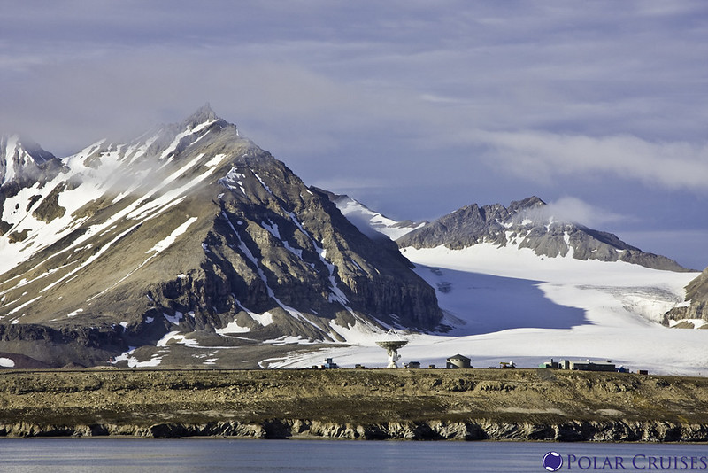

Noodles originates from a small village located near the Arctic circle in a country called Lundven. The village is sheltered from the cold in a valley. It is hidden and mostly unknown because it is so difficult to reach through the snow.
 "Arctic Mountains" by Polar Cruises is licensed under CC BY 2.0